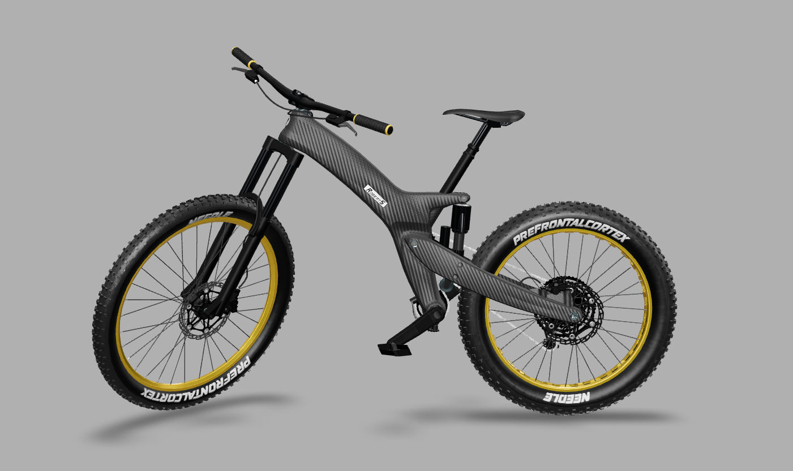
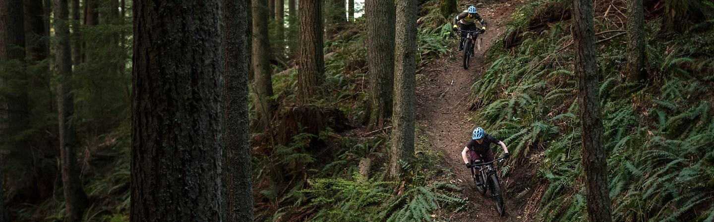
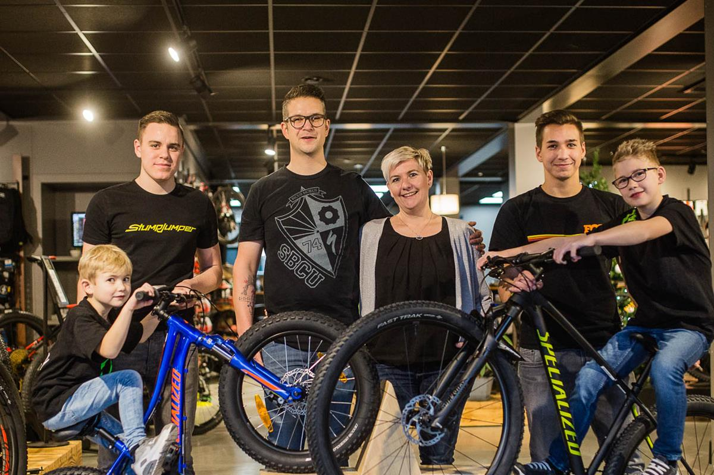

Dein nächstes Kapitel beginnt hier.
DEIN BIKE.
DEIN MOMENT.
Für die erste große Runde. Für den nächsten Gipfel.
Für das Gefühl, genau das richtige Bike zu fahren.
01 / Die Kunst des Bike-Builds
JEDES TEIL.
EIN GEFÜHL.
Du scrollst.
Dein Traum nimmt Form an.

3D-Build wird vorbereitet …
02 / Dein Terrain. Deine Regeln.
WO ZIEHT'S
DICH HIN?
Asphalt unter den Reifen oder Matsch im Gesicht?
Wir finden das Bike für deine Art zu fahren.
 ↗
↗ROAD.
Rennräder entdecken ↗
↗GRAVEL.
Neue Wege finden
↗TRAIL.
Mountainbikes entdecken ↗
↗E-BIKE.
Weiter kommen03 / Lass uns dein Bike finden
DEIN WUNSCH.
UNSER ANTRIEB.
Du hast eine Idee. Oder erst mal eine Frage. Unser KI-Berater findet mit dir heraus, welches Bike zu deinem Leben passt.
Fangen wir mit dir an.
Wo fährst du? Was ist dir wichtig? Frag einfach los. Du bekommst konkrete Bike-Vorschläge, echte Herstellerbilder und einen verständlichen Vergleich.
KI-Beratung · Specialized & Cervélo · mit Quellen
Persönlich. Von der ersten Frage bis zur letzten Schraube.04 / Die Menschen hinter deinem Bike
KEIN BIKE
VON IRGENDWEM.
Von Menschen, die genauso
gern fahren wie du.
Bei Racepoint treffen Achims Begeisterung für besondere Builds und ehrliches Handwerk aufeinander. Mit Elke und dem Team macht er aus „Ich suche ein Bike“ ein „Das ist meins“.
05 / Aus unserer Werkstatt
NICHT NUR ANSEHEN.
MITFIEBERN.
Ein Klick öffnet das Video. YouTube wird erst geladen, wenn du die Wiedergabe bestätigst.
Alle Builds & Werkstattfilme entdecken ↗06 / Damit aus gut perfekt wird
FÜR DICH.
FÜR DEIN BIKE.
Dein Rad verdient gute Hände.
Dein Körper die richtige Sitzposition.